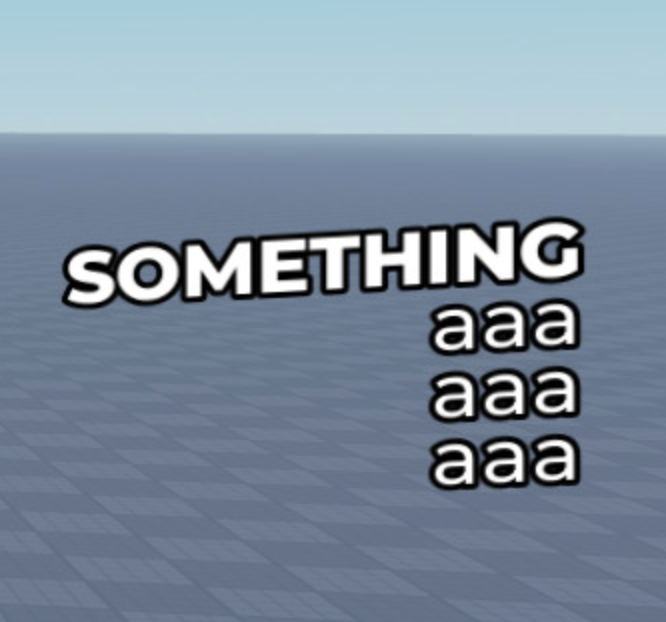
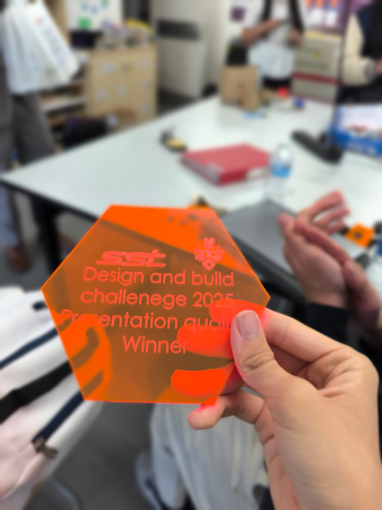

Projects
Some of my past year projects

Screen3D
A Roblox community resource that allows for the creation of 3D UI with 2D UI components, without the hassle of .RenderStepped loops, or arbitrary offsets, or annoying UI resizing issues.

MoveMate
A simplified fitness tracker we constructed using a micro:bit for the Computing Overseas Learning Expedition. We also constructed a website for it over the holidays.

Rhyming Dictionary (SSEF)
A dictionary that helps find words that rhyme, developed for the Singapore Science and Engineering Fair.